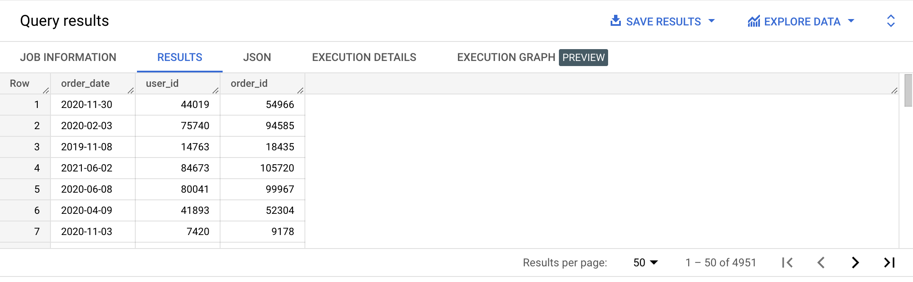
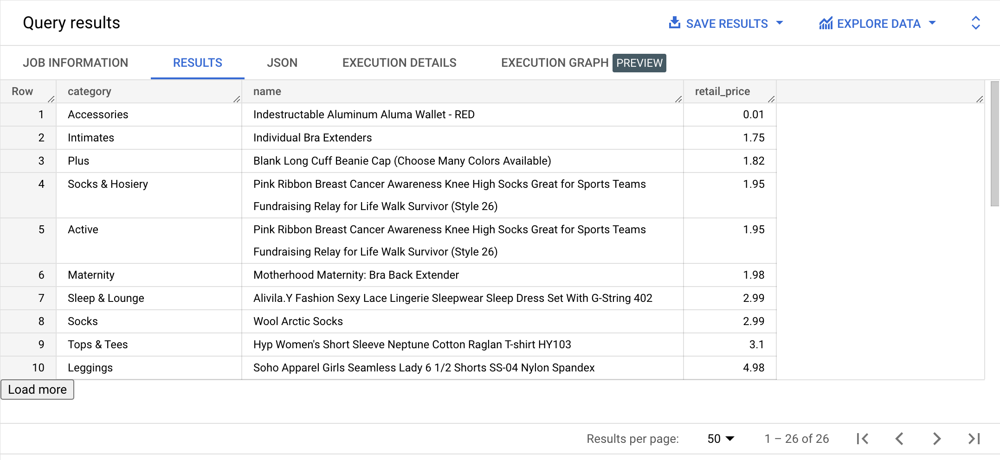
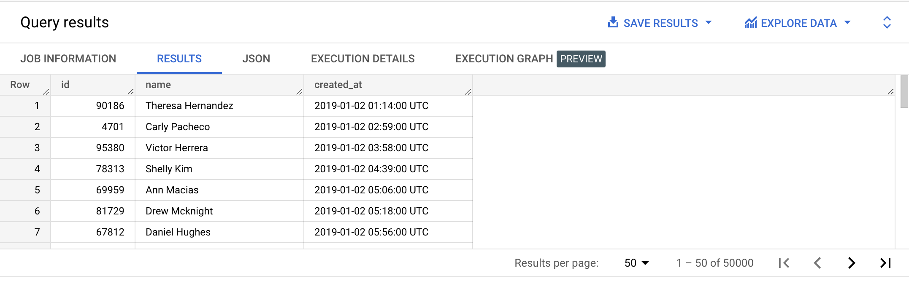
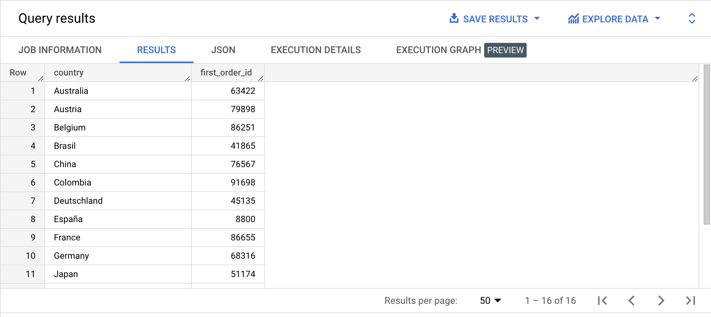
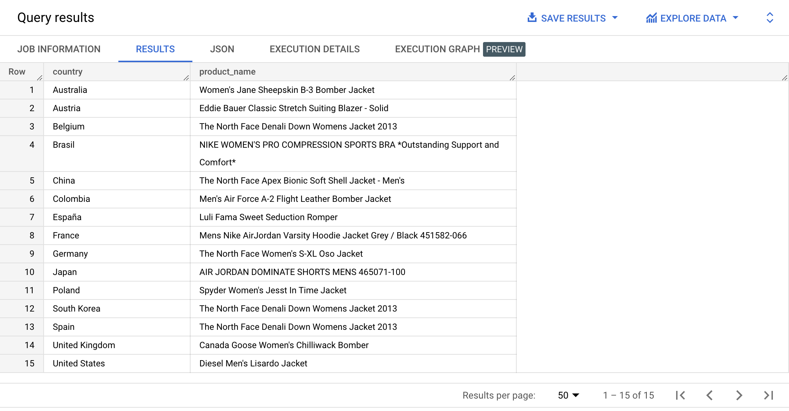
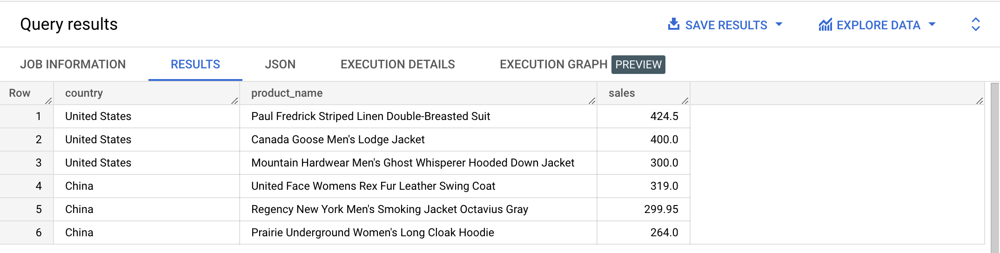
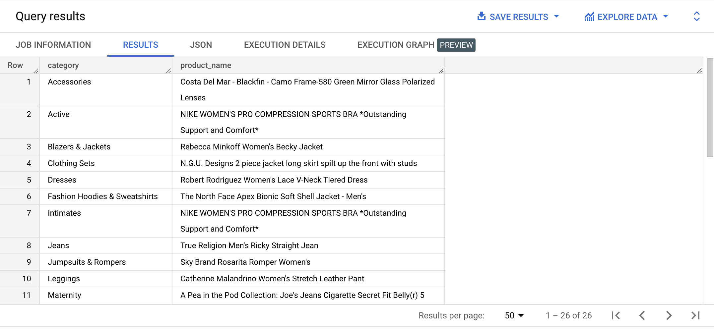
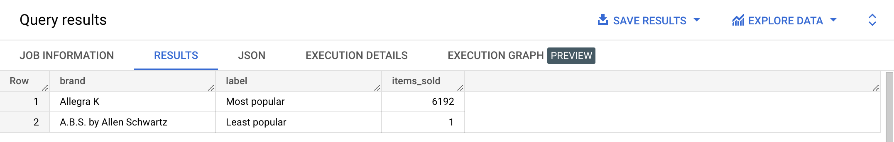
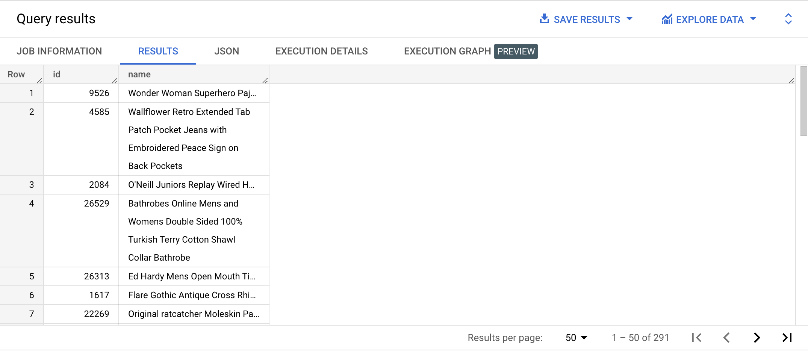

ROW_NUMBER is a the simplest of the window functions that deal with ranking items. In BigQuery, these ranking functions are called numbering functions:Returns the sequential row ordinal (1-based) of each row for each ordered partition. If the ORDER BYclause is unspecified then the result is non-deterministic (⇒ i.e not sorted in any particular way).
SELECT country,
id AS user_id,
created_at AS signup_date,
ROW_NUMBER() OVER(PARTITION BY country ORDER BY created_at ASC) AS row_num
FROM bigquery-public-data.thelook_ecommerce.users
WHERE FORMAT_DATE('%Y', created_at) = '2022'
ORDER BY country ASC;
👉 Check out the official documentation
{% include practice_problems_intructions.html %}bigquery-public-data.thelook_ecommerce.orders

WITH users_orders AS
( SELECT CAST(created_at AS DATE) AS order_date,
user_id,
order_id,
ROW_NUMBER() OVER(PARTITION BY user_id ORDER BY created_at DESC) AS row_num
FROM bigquery-public-data.thelook_ecommerce.orders
)
SELECT order_date,
user_id,
order_id
FROM users_orders
WHERE row_num = 4
ORDER BY RAND();
bigquery-public-data.thelook_ecommerce.products

WITH row_numbered_products AS
( SELECT category,
name,
retail_price,
ROW_NUMBER() OVER(PARTITION BY category ORDER BY retail_price ASC) AS row_num
FROM bigquery-public-data.thelook_ecommerce.products
)
SELECT category,
name,
ROUND(retail_price, 2) AS retail_price
FROM row_numbered_products
WHERE row_num = 1
ORDER BY retail_price ASC;
bigquery-public-data.thelook_ecommerce.users
MOD function for the most elegant solution but it’s not required.
WITH row_numbered_users AS
( SELECT id,
CONCAT(first_name, ' ', last_name) AS name,
created_at,
ROW_NUMBER() OVER(ORDER BY created_at ASC) AS row_num
FROM bigquery-public-data.thelook_ecommerce.users
)
SELECT id, name, created_at
FROM row_numbered_users
WHERE MOD(row_num, 2) = 1;
bigquery-public-data.thelook_ecommerce.orders
bigquery-public-data.thelook_ecommerce.users

WITH orders_countries AS
( SELECT country,
order_id,
orders.created_at
FROM bigquery-public-data.thelook_ecommerce.orders orders
INNER JOIN bigquery-public-data.thelook_ecommerce.users users
ON orders.user_id = users.id
),
row_numbered_orders_countries AS
( SELECT country,
order_id,
created_at,
ROW_NUMBER() OVER(PARTITION BY country ORDER BY created_at ASC) AS row
FROM orders_countries
)
SELECT country,
order_id AS first_order_id
FROM row_numbered_orders_countries
WHERE row = 1
ORDER BY country ASC;
bigquery-public-data.thelook_ecommerce.users
bigquery-public-data.thelook_ecommerce.order_items
bigquery-public-data.thelook_ecommerce.products
Write a query that will return the name of the top selling product in each country.
Sort the results by country in ascending order.

WITH product_sales_by_country AS
( SELECT country,
products.name AS product_name,
retail_price,
order_items.created_at AS order_timestamp
FROM bigquery-public-data.thelook_ecommerce.users users
INNER JOIN bigquery-public-data.thelook_ecommerce.order_items order_items
ON users.id = order_items.user_id
INNER JOIN bigquery-public-data.thelook_ecommerce.products products
ON order_items.product_id = products.id
),
grouped_product_sales_by_country AS
( SELECT country,
product_name,
SUM(retail_price) AS sales
FROM product_sales_by_country
GROUP BY country, product_name
ORDER BY sales DESC
),
row_numbered_top_products AS
( SELECT country,
product_name,
sales,
ROW_NUMBER() OVER(PARTITION BY country ORDER BY sales DESC) AS row_num
FROM grouped_product_sales_by_country
)
SELECT country,
product_name
FROM row_numbered_top_products
WHERE row_num = 1
ORDER BY country ASC;
bigquery-public-data.thelook_ecommerce.users
bigquery-public-data.thelook_ecommerce.order_items
bigquery-public-data.thelook_ecommerce.products

WITH product_sales_by_country AS
( SELECT country,
products.name AS product_name,
retail_price,
order_items.created_at AS order_timestamp
FROM bigquery-public-data.thelook_ecommerce.users users
INNER JOIN bigquery-public-data.thelook_ecommerce.order_items order_items
ON users.id = order_items.user_id
INNER JOIN bigquery-public-data.thelook_ecommerce.products products
ON order_items.product_id = products.id
WHERE CAST(order_items.created_at AS DATE) = DATE('2023-01-01')
),
grouped_product_sales_by_country AS
( SELECT country,
product_name,
SUM(retail_price) AS sales
FROM product_sales_by_country
GROUP BY country, product_name
ORDER BY sales DESC
),
row_numbered_top_products AS
( SELECT country,
product_name,
sales,
ROW_NUMBER() OVER(PARTITION BY country ORDER BY sales DESC) AS row_num
FROM grouped_product_sales_by_country
)
SELECT country,
product_name,
ROUND(sales, 2) AS sales
FROM row_numbered_top_products
WHERE country IN ('United States', 'China')
AND row_num IN (1, 2, 3);
bigquery-public-data.thelook_ecommerce.order_items
bigquery-public-data.thelook_ecommerce.products
Write a query that will return the name of the top selling product in each category.
Sort the results by category in ascending order.

WITH product_sales_by_category AS
( SELECT category,
products.name AS product_name,
retail_price,
order_items.created_at AS order_timestamp
FROM bigquery-public-data.thelook_ecommerce.order_items order_items
INNER JOIN bigquery-public-data.thelook_ecommerce.products products
ON order_items.product_id = products.id
),
grouped_product_sales_by_category AS
( SELECT category,
product_name,
SUM(retail_price) AS sales
FROM product_sales_by_category
GROUP BY category, product_name
ORDER BY sales DESC
),
row_numbered_top_products AS
( SELECT category,
product_name,
sales,
ROW_NUMBER() OVER(PARTITION BY category ORDER BY sales DESC) AS row_num
FROM grouped_product_sales_by_category
)
SELECT category,
product_name
FROM row_numbered_top_products
WHERE row_num = 1
ORDER BY category ASC;
bigquery-public-data.thelook_ecommerce.orders
| average_days_to_vip |
|---|
| 428 |
WITH numbered_users_orders AS
( SELECT user_id,
order_id,
created_at AS order_timestamp,
ROW_NUMBER() OVER(PARTITION BY user_id ORDER BY created_at ASC) AS order_num
FROM bigquery-public-data.thelook_ecommerce.orders
),
first_users_orders AS
( SELECT user_id,
order_id,
order_timestamp AS first_user_order_timestamp,
order_num
FROM numbered_users_orders
WHERE (SELECT COUNT(*) FROM numbered_users_orders) >= 4
AND order_num = 1
),
fourth_users_orders AS
( SELECT user_id,
order_id,
order_timestamp AS fourth_user_order_timestamp,
order_num
FROM numbered_users_orders
WHERE (SELECT COUNT(*) FROM numbered_users_orders) >= 4
AND order_num = 4
),
days_between_orders_by_user AS
( SELECT f1.user_id,
first_user_order_timestamp,
fourth_user_order_timestamp,
(EXTRACT(HOUR FROM (fourth_user_order_timestamp - first_user_order_timestamp)) / 24) AS days_between
FROM first_users_orders AS f1
INNER JOIN fourth_users_orders AS f2
ON f1.user_id = f2.user_id
)
SELECT CAST(AVG(days_between) AS INTEGER) AS average_days_to_vip
FROM days_between_orders_by_user;
bigquery-public-data.thelook_ecommerce.products
bigquery-public-data.thelook_ecommerce.order_items
Don’t worry about handling ties.

WITH brand_products AS
( SELECT brand,
products.id AS item_id
FROM bigquery-public-data.thelook_ecommerce.products products
INNER JOIN bigquery-public-data.thelook_ecommerce.order_items order_items
ON products.id = order_items.product_id
),
row_numbered_brand_products AS
( SELECT brand,
item_id,
ROW_NUMBER() OVER(PARTITION BY brand) AS items_sold
FROM brand_products
),
max_brand AS
( SELECT brand, 'Most popular' AS label, items_sold
FROM row_numbered_brand_products
WHERE items_sold = (SELECT MAX(items_sold) FROM row_numbered_brand_products)
),
min_brand AS
( SELECT brand, 'Least popular' AS label, items_sold
FROM row_numbered_brand_products
WHERE items_sold = (SELECT MIN(items_sold) FROM row_numbered_brand_products)
LIMIT 1
)
SELECT *
FROM max_brand
UNION ALL
SELECT *
FROM min_brand;
bigquery-public-data.thelook_ecommerce.products
Write a query that will display a random 1% sample of all products.

WITH random_products AS
( SELECT id,
name,
FROM bigquery-public-data.thelook_ecommerce.products
ORDER BY RAND()
),
row_numbered_random_products AS
( SELECT id,
name,
ROW_NUMBER() OVER() AS row
FROM random_products
),
one_percent_mark AS
( SELECT CAST(COUNT(*) * 0.01 AS INTEGER) AS number
FROM bigquery-public-data.thelook_ecommerce.products
)
SELECT id,
name
FROM row_numbered_random_products
WHERE row <= (SELECT number FROM one_percent_mark);